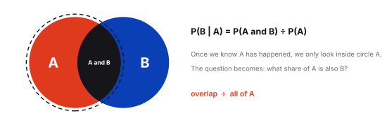
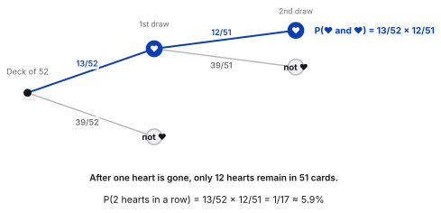
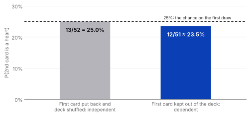
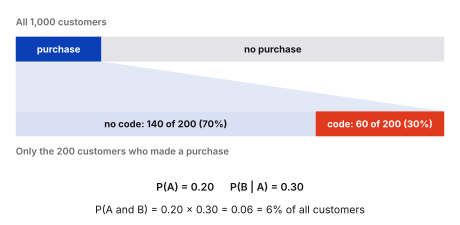

Statistics
Conditional Probability & Independence

So far we looked at the probability of a single event, and at independent events such as two coin tosses. But in real data, one thing happening often changes how likely another thing is. Conditional probability is the tool for that.
Independent vs dependent events
Two events are independent if one happening does not change the probability of the other. Two coin tosses are the classic case: getting heads first tells you nothing about the second toss.
Two events are dependent if the first one does change the probability of the second. Think of an online shop: a customer can only use a discount code after they have made a purchase. The second event is conditional on the first.
Independent
No influence
The first event does not change the probability of the second.
Example: two coin tosses
Dependent
One shapes the other
The first event changes the probability of the second.
Example: purchase, then discount code
The conditional probability formula
The notation P(B | A) is read as "the probability of B given A". The vertical bar means "given that": we assume A has already happened and ask how likely B is under that condition. For two dependent events:
P(A and B) = P(A) × P(B | A)
In words: the probability that both happen equals the probability of A, times the probability of B once A has happened. The same equation can be rearranged to solve for the conditional probability:
P(B | A) = P(A and B) ÷ P(A)
These are two views of one equation. Use whichever fits the information you have: the first when you know P(B | A) and want the probability of both, the second when you know the probability of both and want to isolate the condition.

Independence is a special case
If A and B are independent, knowing A tells us nothing about B, so P(B | A) = P(B). The formula then becomes P(A and B) = P(A) × P(B), which is exactly the multiplication rule from Probability Basics.
Example: drawing two hearts
Draw two cards from a standard deck of 52, one after the other, and keep the first card out of the deck. What is the probability that both are hearts?
- First draw. There are 13 hearts among 52 cards, so P(1st heart) = 13/52 = 25%.
- Second draw. One heart is gone, so 12 hearts are left among 51 cards. P(2nd heart | 1st heart) = 12/51 ≈ 23.5%.
The second probability is lower than the first, which is what makes the events dependent. Putting it together:
P(2 hearts) = 13/52 × 12/51 = 1/17 ≈ 5.9%

And what if you put the first card back and shuffle? Then the deck is full again, the second draw is 13/52 once more, and the two draws are independent.

Example: online shopping
Imagine an e-commerce store. A customer has a 20% probability of making a purchase, and among customers who make a purchase, 30% use a discount code. What is the probability that a randomly selected customer makes a purchase and uses a discount code?
- A = the customer makes a purchase
- B = the customer uses a discount code
Using a discount code depends on making a purchase, so these are dependent events:
P(A and B) = P(A) × P(B | A) = 0.20 × 0.30 = 0.06 = 6%

Stakeholder-friendly interpretation
There is a 6% probability that a randomly selected customer both makes a purchase and uses a discount code.
Don't mix up the two directions
P(B | A) and P(A | B) are different questions. "Of the customers who purchased, how many used a code?" is 30%. "Of the customers who used a code, how many purchased?" is 100%, since a code can only be used with a purchase. The condition always decides which group you start from.
Summary of the formulas
| Situation | Formula |
|---|---|
| Both events happen (dependent) | P(A and B) = P(A) × P(B | A) |
| Probability of B given A | P(B | A) = P(A and B) ÷ P(A) |
| Independent events | P(B | A) = P(B), so P(A and B) = P(A) × P(B) |
Key takeaway
Conditional probability describes how likely an event is once we know that another one has happened. When events are dependent, the second probability changes, so we multiply P(A) by P(B | A). In business, this is how analysts estimate things like the impact of a campaign on sales, which helps stakeholders decide where to invest.